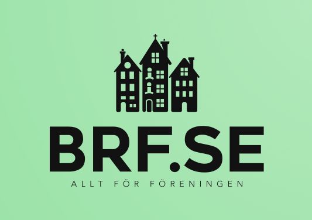

BRF.SE
Projekt: Hemsida, App & skärm | Typ: Skolprojekt 2025

Om projektet
Design av hemsida och app för BRF.SE med målet att förenkla medlemskommunikation och förbättra användarupplevelsen. Implementering av moderna UX-principer och tillgänglighet.
Process
Detta projekt visar designprocessen från research till färdig prototyp. Målet var att skapa en intuitiv lösning som fungerar för alla användare.
Typografi & Färg
Typografi
Lexend (Rubriker)
Roboto (Brödtext)
SF Pro (UI-element)
Färgpalett
Mockups